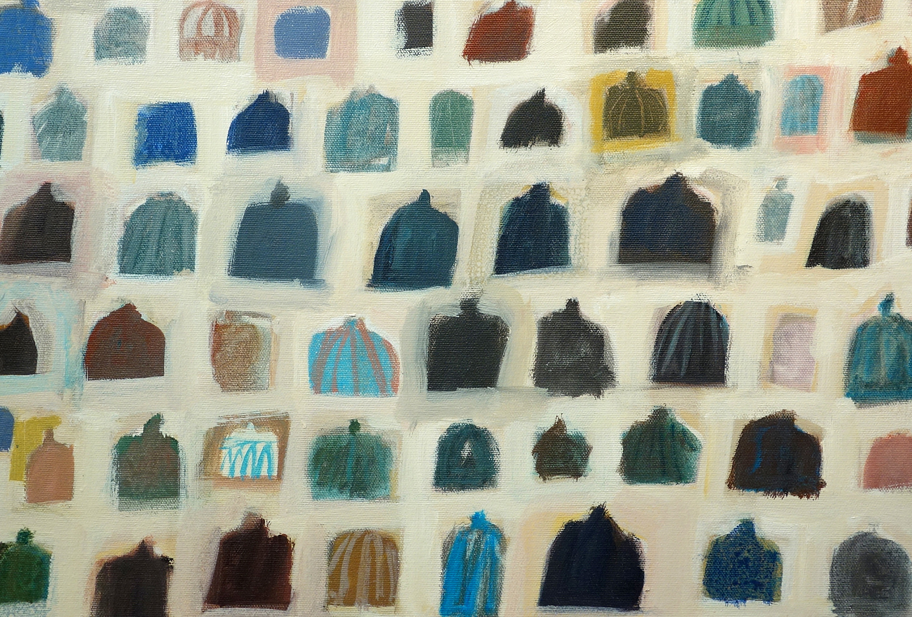

ART Art · Religion · Theology in ORVIETO
Summer 2027
A seminar and studio residency for artists, art teachers, and graduate students, in a 13th-century monastery in Orvieto, Italy.
RomeAssisiFlorence*
- In residence
- July 18 – August 5, 2027
- Early Bird deadline for one of eight $500 scholarships
- January 31, 2027
- Final application deadlineApply by
- March 31, 2027
Learn more and apply at art-in-orvieto.icscanada.edu
*ART in Orvieto includes excursions to these three historic locations.